Training a Markov Process on Pride and Prejudice
Justin Pearson
Oct 26, 2014

For simplicity, we’ll just chop up the tokens by whitespace and keep all the punctuation. Consequently the word “Elizabeth” will be different from the word “Elizabeth,” (with a comma). Fine.


Enumerate the unique words
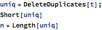
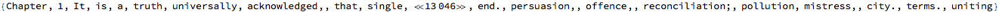
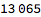
Here’s an association to convert from words to their index in the unique-word list:
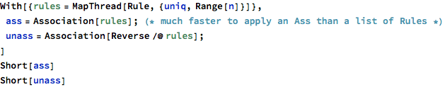


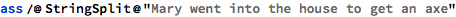


The text of Pride and Prejudice, converted to word indices:
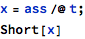
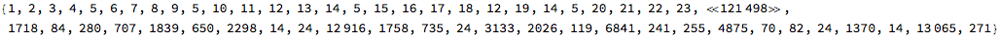

| Chapter | 1 |
| 1 | 2 |
| It | 3 |
| is | 4 |
| a | 5 |
| truth | 6 |
| universally | 7 |
| acknowledged, | 8 |
| that | 9 |
| a | 5 |
| single | 10 |
| man | 11 |
| in | 12 |
| possession | 13 |
| of | 14 |
| a | 5 |
| good | 15 |
| fortune, | 16 |
| must | 17 |
| be | 18 |
| in | 12 |
| want | 19 |
| of | 14 |
| a | 5 |
| wife. | 20 |
| However | 21 |
| little | 22 |
| known | 23 |
| the | 24 |
| feelings | 25 |
| or | 26 |
| views | 27 |
| of | 14 |
| such | 28 |
| a | 5 |
| man | 11 |
| may | 29 |
| be | 18 |
| on | 30 |
| his | 31 |
Method 1: Build our own first-order Markov chain
Build the adjacency matrix for our discrete markov process:
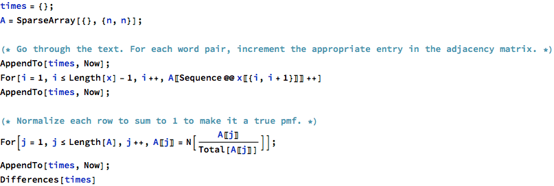
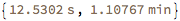
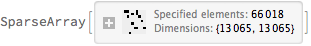

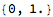
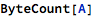


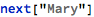
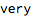
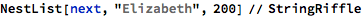

Method 2: Use Mathematica’s build-in DiscreteMarkovProcess
We can use Mathematica’s built-in functions to train a discrete Markov process from our text.
Unfortunately, it’s quite slow for datasets of this size, so we use a subset of the text.
Here we use Mathematica’s “EstimatedProcess” function to estimate the weights of an n-state discrete Markov chain:
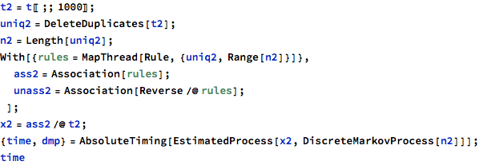

Let’s run the discrete markov process for 200 timesteps:
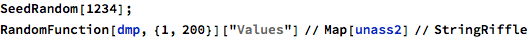
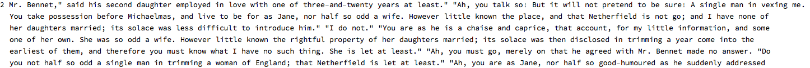
Appendix: Word-frequency analysis
Wordcounts often follow a Zipf distribution: “The top 10% most-frequent words account for 90% of all words.” Let’s see if Pride and Prejudice follows this trend.
Wikipedia:
https://en.wikipedia.org/wiki/Zipf%27s_law
Zipf’s law states that given some corpus of natural language utterances, the frequency of any word is inversely proportional to its rank in the frequency table. Thus the most frequent word will occur approximately twice as often as the second most frequent word, three times as often as the third most frequent word, etc.: the rank-frequency distribution is an inverse relation. For example, in the Brown Corpus of American English text, the word “the” is the most frequently occurring word, and by itself accounts for nearly 7% of all word occurrences (69,971 out of slightly over 1 million). True to Zipf’s Law, the second-place word “of” accounts for slightly over 3.5% of words (36,411 occurrences), followed by “and” (28,852). Only 135 vocabulary items are needed to account for half the Brown Corpus.[4]
Zipf’s law is most easily observed by plotting the data on a log-log graph, with the axes being log (rank order) and log (frequency). For example, the word “the” (as described above) would appear at x = log(1), y = log(69971). It is also possible to plot reciprocal rank against frequency or reciprocal frequency or interword interval against rank.[1] The data conform to Zipf’s law to the extent that the plot is linear.
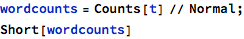
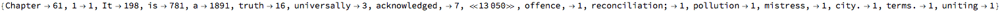
What are the rarest words? What are the most common?

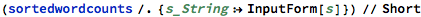
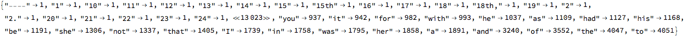
(The numbers on the left are chapter numbers.)
Plot log-log to assess eligibility for Zipf distribution
Let’s plot log-rank and log-count as described above, so the word “to” would appear at x = log(1), y = log(4051), “the” would appear at x = log(2), y = log(4047), etc.
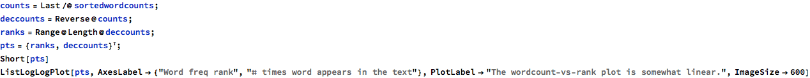
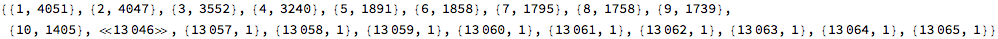

Looks pretty linear in the middle, not so great at the ends. What’s up with the long tail -- all the words that only appear once?
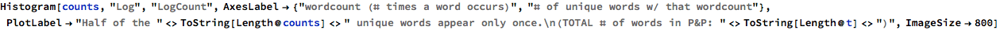

A lot of words occur only once:


It is mainly due to us not erasing punctuation:


How many words account for half the text?
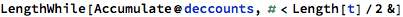


Wow, one could write half of Pride and Prejudice with only 84 words!
Fit a Zipf dist to it.
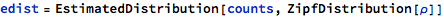
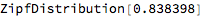
The estimated distribution seems to line up well with the histogram of wordcounts:

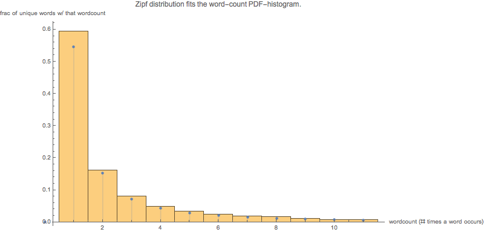
With this, you can answer questions like: What’s the probability that a word occurs more than 100 times in the text?
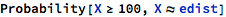
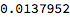
Hopefully this matches the fraction of the unique words that occur more than 200 times:
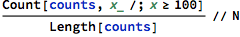

Not too bad.
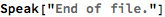